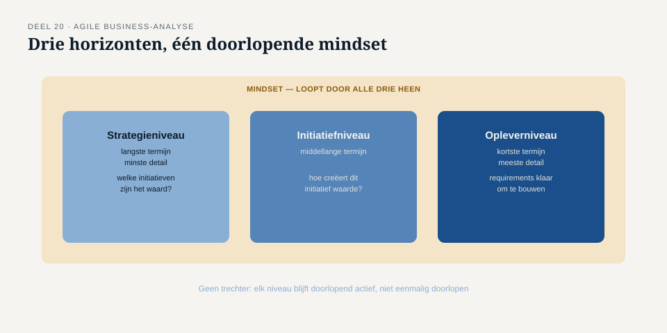
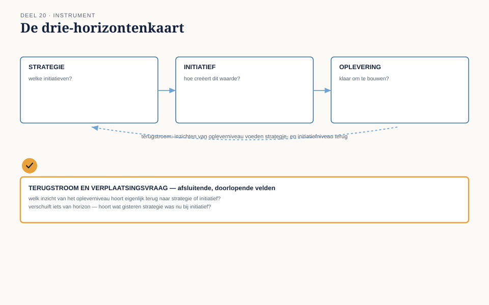

Deel 20 — Agile business-analyse
Slidedeck · Ductus-cursus Business-analyse · niveau 2 · deel 20 van 30 · 24 slides
Slide 1 — Titel
Business-analyse — deel 20 Agile business-analyse
Zelfstandig leesbaar · los aanbiedbaar
Slide 2 — Drie dingen tegelijk
Precies voor de huidige cyclus. Redelijk zeker voor de komende cycli. Vaag maar richtinggevend voor de lange termijn.
Slide 3 — Twee risico’s
Te vroeg, te uitgebreid analyseren: verspilde moeite. Te laat, te weinig: bouwen zonder onderbouwing.
Slide 4 — Waar we het over gaan hebben
- Een agile mindset, niet alleen een methode
- Drie horizonten
- Wanneer is iets “rijp”?
- De drie-horizontenkaart · het AAC-zijpad
Slide 5 — Geen extra technieken
Een mindset: continue feedback en snel leren, boven alles in één keer vastleggen.
Slide 6 — Drie kenmerken
Waarde boven volledigheid Voortdurend leren boven eenmalig vaststellen Samenwerking boven overdracht
Slide 7 — Verspilling
Te vroeg, te uitgebreid analyseren is in agile werk net zo goed verspilling als niet analyseren.
Slide 8 — Drie horizonten
Strategieniveau · Initiatiefniveau · Opleverniveau
Van breed en vaag naar smal en scherp.
Slide 9 — Strategieniveau
Welke initiatieven zijn de moeite waard, gegeven de beschikbare middelen?
Slide 10 — Initiatiefniveau
Hoe creëert dit initiatief waarde? Behoeften en opties beter begrijpen.
Slide 11 — Opleverniveau
Het werk van de huidige cyclus — klaar om gebouwd en getest te worden.
Slide 12 —

Drie horizonten, met een mindset-laag die alle drie doorkruist
Slide 13 — Geen simpele trechter
Informatie stroomt ook terug.
Wat je bij het bouwen leert, kan het beeld op initiatief- of strategieniveau bijstellen.
Slide 14 — [Opdracht 2]
Een item ging terug van opleverniveau naar initiatiefniveau. Welk criterium bleek niet vervuld?
Slide 15 — Wanneer is iets rijp?
Is de behoefte voldoende gevalideerd? Past het binnen één cyclus? Zijn de afhankelijkheden bekend, niet blokkerend? Zou het morgen kunnen veranderen op een manier die alles verandert?
Slide 16 — Zolang één antwoord “nee” is
Hoort het item op een verdere horizon thuis.
Verdere uitwerking nu: verspilling.
Slide 17 — De werkvorm van dit deel
De drie-horizontenkaart
Strategie · Initiatief · Oplevering · Terugstroom
Slide 18 — Het veld dat het verschil maakt
Welk item stond vorige cyclus nog op initiatiefniveau — en wat maakte het rijp om te verplaatsen?
Slide 19 — Waarom dit ertoe doet
Zonder dit veld: backlogverfijning wordt een impliciete gewoonte in plaats van een afweging.
Slide 20 —

De drie-horizontenkaart — met terugstroom en verplaatsing als doorlopende velden
Slide 21 — Het zijpad: IIBA-AAC
Agile Analysis Certification — standalone, niet-gestapeld, geen ervaringseis.
85 vragen · 2 uur · vier domeinen
Slide 22 — Vier domeinen, exact deze indeling
Agile Mindset · Strategy Horizon Initiative Horizon · Delivery Horizon
Slide 23 — Eigen oefenvragenbank
In de bijlage van het werkboek — eigen vragen, geen overgenomen examenvragen.
Verifieer de actuele blauwdruk vóór een echte poging.
Slide 24 — Volgende keer
Het meest continue deel van dit niveau is afgerond.
Deel 21: terug naar de kernlijn — evalueert de oplossing daadwerkelijk wat werd beoogd?